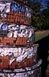

American
ceramist Robert Harrison
received a BFA from the University of Manitoba in 1975 and an
MFA from the University of Denver in 1981. He taught at Gonzaga
University, Spokane, Washington from 1981-83, was artist-in-residence
at the Archie Bray Foundation in Helena, Montana from 1983-85,
Assistant Head of the ceramics program at the Banff Centre for
the Arts in Alberta, Canada from 1985-88 and Acting Head from
1988-89.
He has held numerous administrative positions, including
Director-at-Large of NCECA from 1993-95 and Publications Director
from 1995-98, was a board member at the Archie Bray Foundation
from 1993-2005, President of the Board from 1999-2004 and Facilities
Chair from 1996-2004.
Harrison counts amongst his many awards and fellowships
four Manitoba Arts Council Grants and two university fellowships.
His most recent public commissions include sculptures at Kansas
State University (2002), the University of Wales, Aberystwyth,
UK (2003) and the Museum of International Ceramic Art, Guldagergaard,
Skaelskor, Denmark (2003).
He
has become known for his site-specific
sculptures and museum
installations of ‘stacks’, gateways referencing
architectural forms, often incorporating a distinctive arch and
more recently loosely stacked house bricks and ceramic shards.

His small-scale sculptural works include 'clay
windows’, ‘shells’,
arch studies and his recent gold lustered ‘light
radiators’, which were inspired by a work his then
six year old daughter made.

{kind=link}
{kind=link}
{kind=link}
{kind=link}
{kind=link}
{kind=link}
{kind=link}
{kind=link}
{kind=link}
{kind=link}
{kind=link}